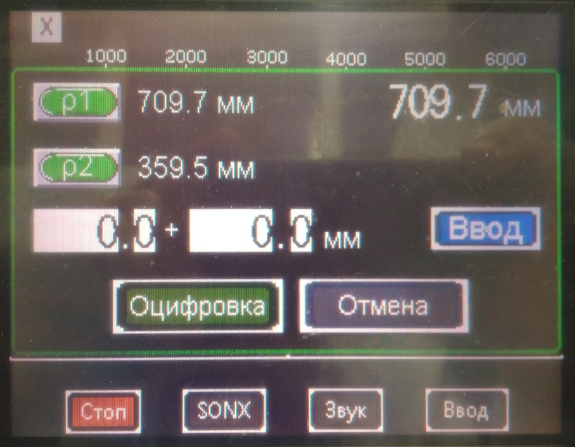

Градуировка БОИ4
ЛИНЕЙНОСТЬ
Установить 3 шт. БОИ 4 в держателе на поверочную дозиметрическую установку УДГ-АТ130 таким образом, чтобы центральная ось коллимированного пучка гамма-излучения установки была перпендикулярна задней стенке и направлена на метку, а расстояние от источника до центра детектора было выставлено посередине колпачка БОИ 4.
Переключить БОИ 4 в режим скорости счета (для этого нужно нажать на окно с измерениями).
На пульте управления КС-АТ130 нажать оцифровку в окне Х оцифровки

Далее нажать и
Запустить ПО CalculationSources
- Рассчитать расстояние для H*(10)
- Выставить точку 100 мЗв/ч
- Приработать БОИ 4 перед градуировкой в течении 5 мин
- Установить источник 137Cs 70 мЗв/ч
- Записать значения скорости счёта
- Установить источник 137Cs 7 мЗв/ч
- Записать значения скорости счёта
- Установить источник 137Cs 70 мкЗв/ч
- Записать значения скорости счёта
Запустите программу MathCad.
- В расчетной программе MathCad выберите файл расчета.
- Ввести полученные значения скоростей счета.
- Вручную запишите полученные коэффициент по чувствительности и мёртвому времени в БОИ4, для этого:
- нажмите на БОИ 4 Меню
- выберите Коэффициенты ГМ
- введите пароль — актуальное время на БОИ 4.
- Переключите БОИ 4 в режим мощности дозы
- Снять ПСИ по Cs в точках 70мк, 700мкЗв/ч 7мЗв/ч и 70 мЗв/ч
- Данные переписать в электронный журнал градуировки
- Данные переписать в электронный журнал градуировки
Важно! Для записи коэффициентов в память после выключения БОИ4 нужно предварительно выйти из программы 1117mobile или
SurveM, только затем выключать БОИ 4.